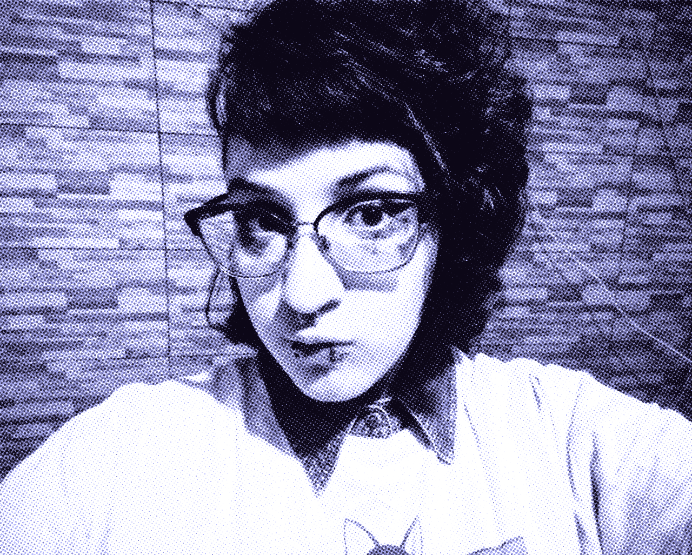

Hey! My name is Nariel Arthur and I'm a multimedia designer and artist from São Paulo, Brazil. My skills include graphic design, user interface, layouting, and illustration. As a multidisciplinary professional, I constantly seek to integrate experimentation and theoretical foundations to my creative work, which is full of textures, abstractionism, pixel art, and asian pop aesthetics.
I have 8+ years of experience in the field and had dealt with topics such as diversity, health, cybersecurity, education, and technology. I contributed for digital marketing campaigns, events, social media strategies, digital products (specially apps and games), branding, market studies, and design analysis. I also earned a scholarship at Apple Developer Academy in 2020 and was elected an Ambassador the following year, where I developed authorial iOS applications and had the opportunity to participate in exclusive conferences and workshops.
I currently work as a freelancer while dedicating to personal and academic projects. In my spare time, I'm an internet heavy user and a fan of retro games, which are huge references in my creations. I'm also into sci-fi, animes, music, tarot, social movements, and cats.
もしもし。 ☆トナリアウ★ です！ (◍•ᴗ•◍)
🇧🇷 Oi! Me chamo Nariel Arthur, sou designer e artista multimídia residente de São Paulo. Minhas competências englobam design gráfico, interface do usuário, diagramação e ilustração. Tenho um perfil multidisciplinar e busco constantemente integrar experimentação e fundamentação teórica ao meu trabalho criativo, que é repleto de texturas, abstracionismo, pixel art e estética pop asiática.
Tenho +8 anos de experiência na área e já lidei com assuntos como diversidade, saúde, cibersegurança, educação e tecnologia. Contribuí com campanhas de marketing digital, eventos, estratégias de redes sociais, produtos digitais (em especial, aplicativos e jogos), construção de marcas, estudos de mercado e análises de design. Também fui bolsista na Apple Developer Academy em 2020 e eleita Embaixadora no ano seguinte, onde desenvolvi projetos autorais de aplicativos para iOS e tive a oportunidade de participar de conferências e workshops exclusivos.
Atualmente trabalho como freelancer e em paralelo me dedico a projetos pessoais e acadêmicos. Nas horas vagas, sou usuária assídua da internet e fã de jogos retrô, que se manifestam como grandes referências nas minhas criações. Também me interesso por ficção científica, animes, música, tarot, movimentos sociais e gatinhos.
Education (⊡-⊡)و✎⊹₊⟡⋆
UX Design
Graduate degree @ Senac EAD (2025)
Digital Graphic Design
Graduate degree @ Senac Lapa Scipião (2023)
Multimedia Production
Undergraduate degree @ Centro Universitário Senac (2021)
Visual Communication
Technical education @ SENAI-SP (2017)
Relevant experiences ✩°｡⋆⸜(ू｡•ω•｡)
Multimedia Designer
Hub Rocket (March 2023 → May 2025)
UX/UI Designer
Senac São Paulo (June 2022 → October 2022)
UX/UI Designer
Apple Developer Academy (February 2020 → December 2021)
Graphic Designer
Flipside (March 2018 → March 2019)